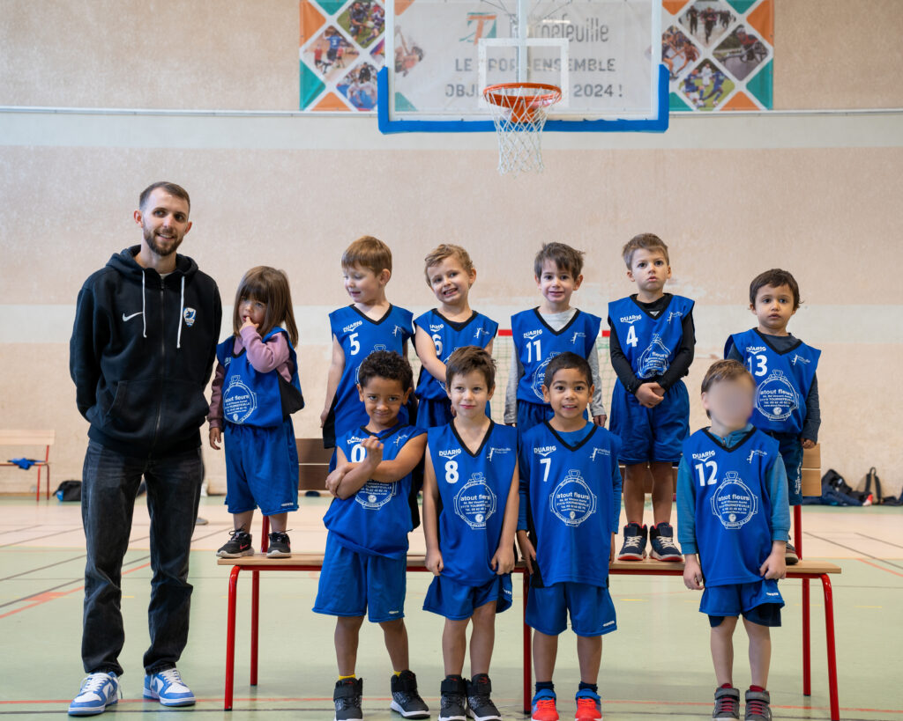
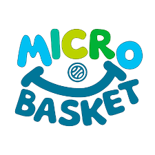
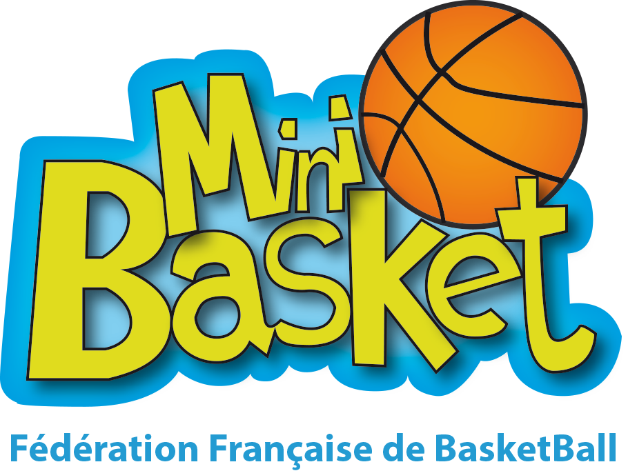
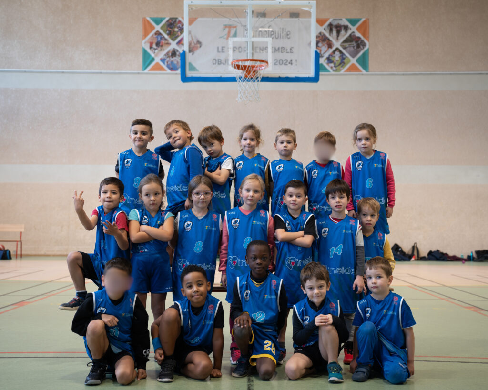
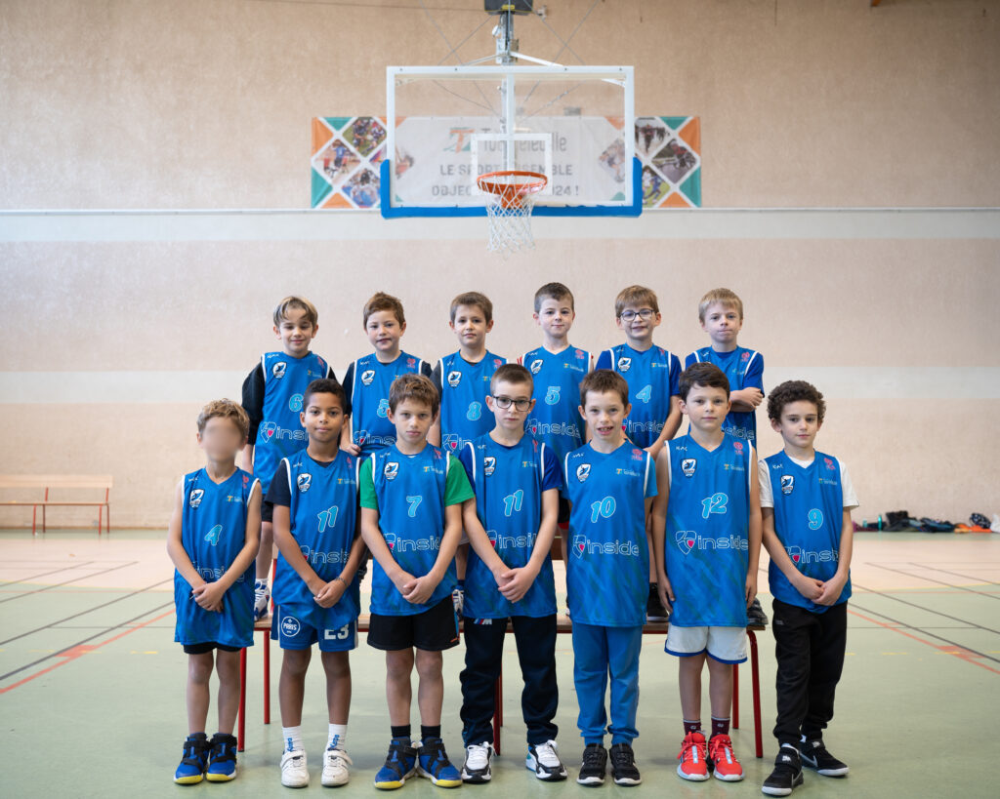
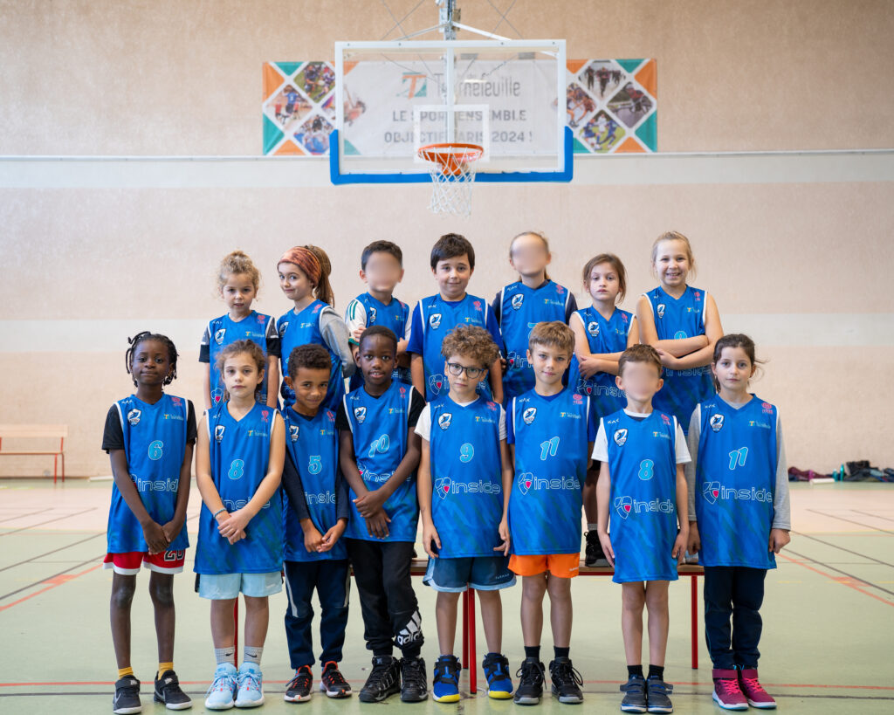
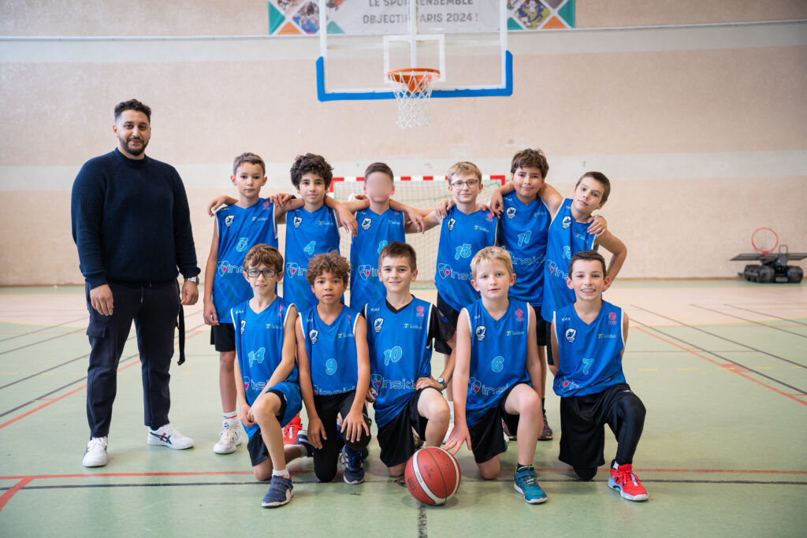
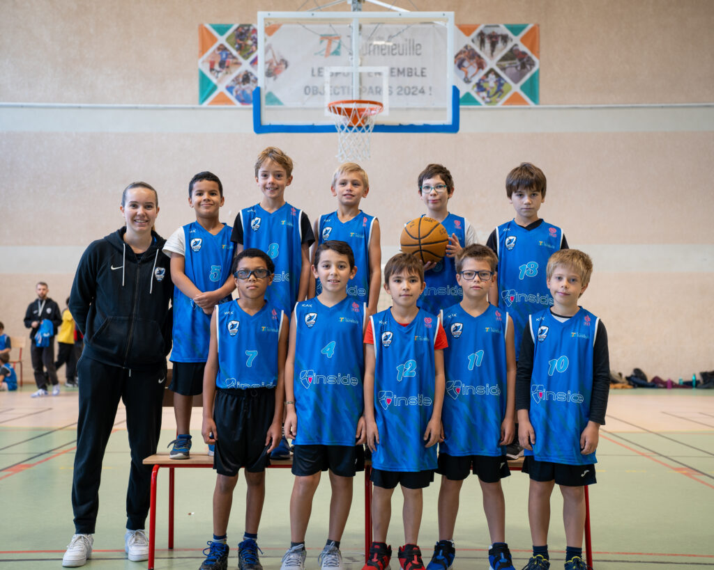
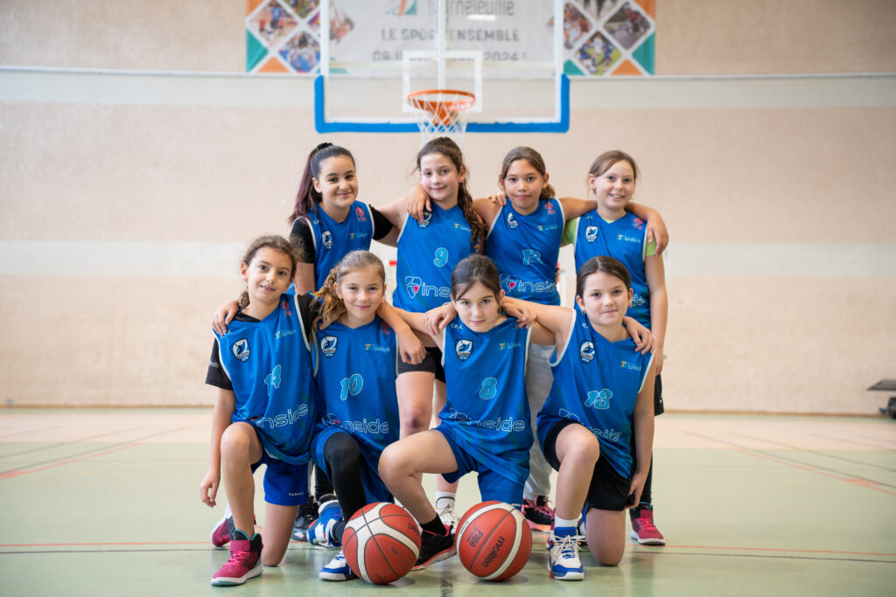

Équipe U5
Samuel Lebrun
Responsable école de basket
Découvrir · Apprendre · S’épanouir
Les premiers dribbles, le plaisir de jouer ensemble.
De 3 à 5 ans

Le plaisir du jeu

Inventé en 1950 par René Lavergne (professeur d’Education Physique et Sportive), le MiniBasket initie les jeunes de 6 à 12 ans à la vie sportive en général, et au basket en particulier.
Le MiniBasket se pratique dans un esprit de loyauté et de camaraderie. Le matériel est adapté aux enfants qui jouent avec des ballons de petite taille (taille 3 et 5) et sur des paniers ajustables. Le non-contact et la notion de marcher sont les 2 règles principales du MiniBasket.
Près de 160 000 licenciés pratiquent le MiniBasket.
Grandir ensemble

Samuel Lebrun
Responsable école de basket

Samuel Lebrun
Responsable école de basket

Samuel Lebrun
Responsable école de basket

Samuel Lebrun
Responsable école de basket

Reda Boulahyane
Coach Principal

Salomé Sylvestre
Coach principal

Samuel Lebrun
Responsable école de basket
Envie de rejoindre l’école de basket ?
Les inscriptions